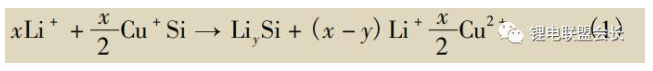

2023-12-19 补锂剂
为了解决这个问题，人们研究了预锂化技术。通过预锂化对电极材料进行补锂，抵消形成SEI膜造成的不可逆锂损耗，以提高电池的总容量和能量密度。
一、负极补锂技术
常见的预锂化方式是负极补锂，如锂箔补锂、锂粉补锂等，都是目前重点发展的预锂化工艺。此外，还有利用硅化锂粉和电解锂盐水溶液来进行预锂化的技术。
1 锂箔补锂
锂箔补锂是利用自放电机理进行补锂的技术。金属锂的电位在所有电极材料中最低，由于电势差的存在，当负极材料与金属锂箔接触时，电子自发地向负极移动，伴随着Li+在负极的嵌入。
在生长于不锈钢基底的硅纳米线负极上滴加电解液，再与锂金属箔直接接触，进行补锂。对补锂后的负极进行半电池测试，发现: 未补锂的开路电压为1.55V，在0.01～1.00V首次0.1C放电的嵌锂比容量为3800mAh/g; 补锂后的硅纳米线开路电压为0.25V，首次嵌锂比容量为1600mAh/g。
将锡碳负极与被电解液浸润的锂箔直接接触180min，进行补锂。用半电池测试，补锂后锡碳的不可逆比容量由680mAh/g减少到65mAh/g。将该负极构成全电池，1.0C倍率在3.1～4.8V下测试的ICE接近100% ，且循环稳定，倍率性能较好。
尽管与锂箔直接接触，可以实现负极预锂化，但预锂化的程度不易精确控制。不充分的锂化，不能充分提高 ICE; 而补锂过度，可能会在负极表面形成金属锂镀层。
Z. Y. Cao等对锂箔补锂的安全性进行了改善，设计的活性材料/聚合物/锂金属三层结构负极可在环境空气中稳定30～60min，足够负极进行加工。三层结构分别为: 在铜箔上通过电化学沉积的金属锂层，对锂层进行包覆聚甲基丙烯酸甲酯保护层以及活性材料层。
2 稳定化锂金属粉末( SLMP)
锂粉补锂是富美实公司提出的，开发的SLMP比容量高达3600mAh/g，表面包覆了2%～5%的碳酸锂薄层，可在干燥环境中使用。将SLMP应用于负极预锂化，主要有两种途径: 在合浆过程中添加，或直接添加到负极片表面。
常规的负极合浆，使用PVDF/NMP或SBR+CMC/去离子水体系，但SLMP与极性溶剂不兼容，只能分散于己烷、甲苯等非极性溶剂中，因此不能在常规的合浆过程中直接加入。采用SBR-PVDF/甲苯体系，可将SLMP直接混合在石墨电极浆料中。经过SLMP对负极的预锂化，在0.01～1.00V、0.05C的条件下，电池的ICE从90.6% 提高到96.2%。
与在合浆过程中加入相比，SLMP直接加载到干燥的负极表面更简单易行。使用SLMP 对硅-碳纳米管负极进行预锂化，将质量分数为3%的SLMP/甲苯溶液滴在硅-碳纳米管负极表面，待甲苯溶剂挥发后，进行压片、激活。预锂化后，负极的首次不可逆容量减少了20%～40% 。
3 硅化锂粉
纳米硅化锂粉的尺寸很小，更有利于在负极中的分散。此外，其已处于膨胀状态，循环过程中的体积变化不会对整个电极的结构造成影响。目前，对硅化锂粉补锂添加剂的研究较少，仅有J. Zhao等对硅化锂粉的补锂性能和稳定性改善进行了研究。
半电池体系以0.05C在0.01～1.00V充放电，添加15%硅化锂粉后，硅负极的ICE从76% 提高到94% ; 添加9%硅化锂粉的中间相炭微球的ICE从75%提高到99% ; 添加7%硅化锂粉的石墨负极的ICE从87%提高到99%。
4 电解锂盐水溶液进行补锂
无论是使用锂箔、SLMP还是硅化锂粉来补锂，都要涉及金属锂的使用。金属锂价格高、活性大，操作困难，储存与运输需要高额的费用用于保护。如果补锂过程不涉及金属锂，可以节约成本，提高安全性能。
可通过在电解池中电解Li2SO4水溶液来对硅进行补锂，牺牲电极为浸入Li2SO4中的铜线，补锂反应如式(1)所示:

二、正极补锂技术
典型的正极补锂是在正极合浆过程中添加少量高容量材料，在充电过程中，Li+从高容量材料中脱出，补充首次充放电的不可逆容量损失。目前，作为正极补锂添加剂的材料主要有: 富锂化合物、基于转化反应的纳米复合材料和二元锂化合物等。
1 富锂化合物
使用富锂材料Li1+xNi0.5Mn1.5O4来补偿Si-C|LiNi0.5Mn1.5O4全电池的不可逆容量损失。使用混合正极的电池以0.33C在3.00～4.78V循环100次的容量保持率为75% ，而使用纯LiNi0.5Mn1.5O4正极的电池仅为51%。
Li2NiO2也可作为正极补锂添加剂使用，但在空气中的稳定性较差。可使用异丙醇铝对 Li2NiO2进行改性，合成了在空气中稳定的氧化铝包覆的Li2NiO2材料，补锂效果优异。
2 基于转化反应的纳米复合材料
尽管富锂化合物作为补锂添加剂取得了一定的效果，但首次的补锂效果仍受限于较低的比容量。基于转化反应的纳米复合材料，由于存在较大的充/放电电压滞后，在电池首次充电过程中可贡献出大量的锂，而嵌锂反应在放电过程中却不能发生。
Y.M.Sun等研究了M/氧化锂、M/氟化锂、M/硫化锂 (M=Co、Ni和Fe) 作为正极补锂添加剂的性能。
通过合成的纳米Co/氧化锂复合材料在以50mA/g在4.1～2.5V循环，首次充电的比容量达619mAh/g，放电比容量仅为10mAh/g; 在环境空气中暴露8h后，脱锂比容量仅比初始值小了51mAh/g，放置2d后，脱锂比容量仍有418mAh/g，具有良好的环境稳定性，可与商业化电池的生产过程兼容。
氟化锂的锂含量高、稳定性好，是一种潜在的正极补锂材料。利用转化反应构造的M/LiF纳米材料，可以克服 LiF 电导率和离子导率低、电化学分解电位高、分解产物有害等问题，使氟化锂成为一种优良的正极补锂添加剂。硫化锂的理论容量达到1166mAh/g，但作为补锂添加剂使用，仍有很多问题需要解决，如与电解液的兼容性、绝缘、环境稳定性差等。
尽管较富锂化物有更高的补锂容量，但基于转化反应的纳米复合材料在首次补锂后，会残余没有活性的金属氧化物、氟化物和硫化物等，降低电池的能量密度。
3 二元锂化合物
二元锂化合物的理论比容量要高得多。Li2O2、Li2O 和Li3N的理论比容量分别达到1168mAh/g、1797mAh/g和2309mAh/g，只需要少量的添加，就可实现类似的补锂效果。理论上，这些材料在补锂后的残余物是O2、N2等，可在电池形成SEI膜过程中排出的气体。
将商业化的Li3N研磨成粒径为1～5μm的粉体，用作补锂添加剂。半电池体系下，添加了1%和2%Li3N的LiCoO2电极，以0.1C在3.0～4.2V的首次充电比容量分别为167.6 mAh/g和178.4mAh/g，较纯LiCoO2上升了18.0mAh/g、28.7mAh/g。
将商业化Li2O2与NCM混合使用，补偿石墨负极首次充电过程中的锂损失。混合电极中的NCM起到了活性材料和催化剂的双重作用。为了高效地催化分解Li2O2，在正极中加入1%球磨6h得到的NCM。全电池在2.75～4.60V充放电，0.3C可逆比容量为165.4 mAh/g，较石墨|NCM全电池提高了 20.5% 。
测试显示，Li2O2分解释放的氧气会消耗全电池中有限的Li+，导致添加Li2O2的全电池存在明显的容量衰减，但在排出气体后，容量即可得到恢复。电池在实际生产过程中的首次充电是在开放体系中进行的，密封前会排出形成SEI膜和一些副反应产生的气体，因此可减小O2释放造成的影响。
三、结论与展望
对比两种补锂方法，负极补锂路线补锂试剂的( 锂箔、锂粉和硅化锂粉) 容量高，但操作复杂、对环境要求高; 通过在正极中添加补锂添加剂的正极补锂路线胜在安全稳定性高，与现有电池生产工艺兼容性好。
未来负极补锂技术的研究应着重改进其在电池制造过程中的稳定性，开发与工业化生产相兼容且工艺简单的技术方案; 正极补锂则应着重开发补锂容量高，使用量小，补锂后残余量小的添加剂体系。